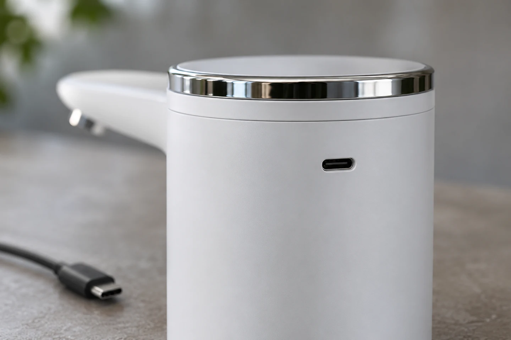
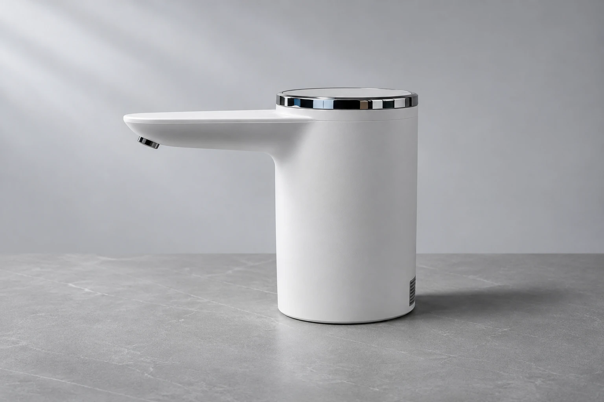

Помпа для воды MKN-CSQ818
От стакана до кувшина
Подставьте посуду и выберите одну из шести порций воды.
- Дозировка
- 6 порций
- Объём порции
- 0,1–1,5 л
- Зарядка
- USB-C
Как помпа отмеряет порцию

Зарядка с обратной стороны
Разъём USB-C находится на корпусе с обратной стороны от носика.
Какая порция поместится в вашу посуду?
Стакан со льдом
В стакане на 300 мл часть объёма уже занята льдом и лимоном. Если свободно хотя бы 200 мл, выберите 0,2 л. Если места осталось примерно на полстакана, возьмите порцию 0,1 л.
Бутылка перед выходом
В бутылку на 750 мл можно набрать 700 мл за два раза. Выберите сначала 0,5 л, затем 0,2 л. Под крышкой останется 50 мл свободного объёма.
Кувшин на стол
Если для лимонада требуется 1,3 л воды, наберите в кувшин 0,8 л и добавьте 0,5 л. Объём самого кувшина выбирайте с учётом других ингредиентов, которые положите позже.
Выберите порцию
100 мл
Небольшая порция для маленькой чашки.
200 мл
Порция на стакан объёмом 200 мл.
300 мл
Вариант для большой кружки на 300 мл.
500 мл
Пол-литра для бутылки соответствующего объёма.
800 мл
Для бутылки или небольшого кувшина от 800 мл.
1 500 мл
Самая большая порция для кувшина от полутора литров.
Носик вынесен вперёд
Носик выступает за корпус, поэтому уровень воды в посуде остаётся на виду.

Характеристики
Все параметры 4
- Порции
- 0,1 / 0,2 / 0,3 / 0,5 / 0,8 / 1,5 л
- Напряжение аккумулятора
- 3,7 В
- Разъём
- USB Type-C
- Параметры зарядки
- 5 В / 1 А
Что выбрать для литровой бутылки?
Литр набирается двумя порциями по 0,5 л. Другой вариант для пустой бутылки того же объёма — сначала 0,8 л, затем 0,2 л.
Как читать 0.3L на панели?
Буква L означает литры, десятичная часть на корпусе отделена точкой. Для рецепта с 300 мл воды выбирайте 0.3L, а если требуется 100 мл — 0.1L.
Подойдёт ли зарядка на 5 В?
Для входа USB Type-C указано питание 5 В и 1 А. Обозначение 3,7 В относится к встроенному аккумулятору, поэтому при подборе питания ориентируйтесь на параметры входа.
Где оставить место, если бутыль стоит в нише?
Объём выбирают сверху. Оставьте над помпой место для руки и разверните носик туда, где можно поставить кувшин. Разъём зарядки находится с противоположной стороны корпуса.

Помпа для воды
MKN-CSQ818
[6 990 ₸]
- [В наличии]
- Доставка [1–7 дней]
- Гарантия [12 месяцев]
Задать вопрос продавцу
Скопируйте текст и отправьте его продавцу. Название и модель уже указаны.